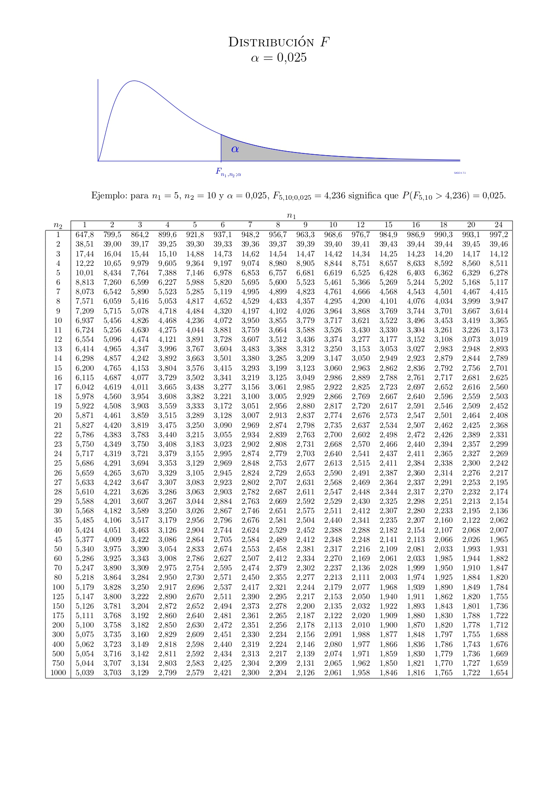
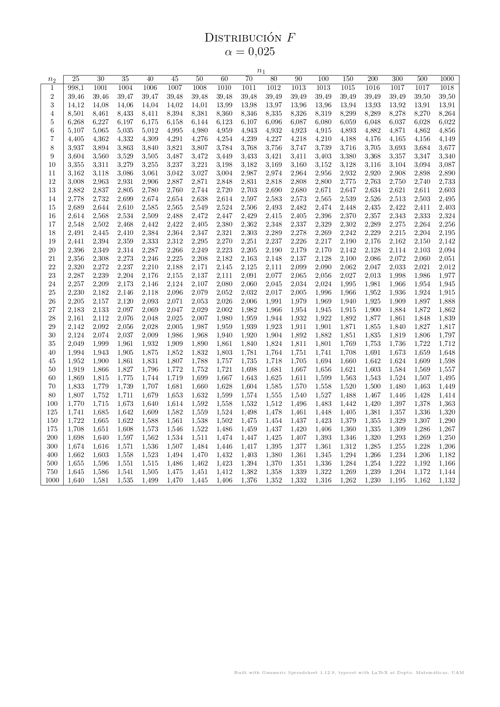

Página Web
Escanea para ver esta presentación
Portafolio 02
Prueba F para la Comparación de Dos Varianzas
F Análisis y Resultados de la Prueba F (Bilateral)
Definición de Hipótesis
Para calcular el estadístico \(F\), tomamos la razón entre la varianza mayor y la varianza menor. \[ F_p = \frac{s_{mayor}^2}{s_{menor}^2} \]
Gráfica: Distribución F y Regiones de Rechazo

Interpretación de la Prueba
Como \(F_p\) (41.86) es mayor que el valor crítico superior (1.8907), el estadístico cae en la zona de rechazo. Hay evidencia estadística suficiente para afirmar que las varianzas poblacionales son significativamente diferentes.
Análisis del Posible Error (Error Tipo I)
- Tipo de Error: Falso Positivo.
- Significado Estadístico: Rechazar la hipótesis nula cuando en realidad es verdadera.
- En contexto: Afirmar que las varianzas son diferentes, cuando en la realidad (a nivel poblacional) las varianzas fuesen iguales. La probabilidad de cometer este error es igual a \(\alpha = 0.05\)) (5%).
T Tablas de Referencia (Distribución F)
A continuación se presentan las tablas de la distribución F con \(\alpha = 0.025\)) que se utilizan como referencia para este portafolio.

